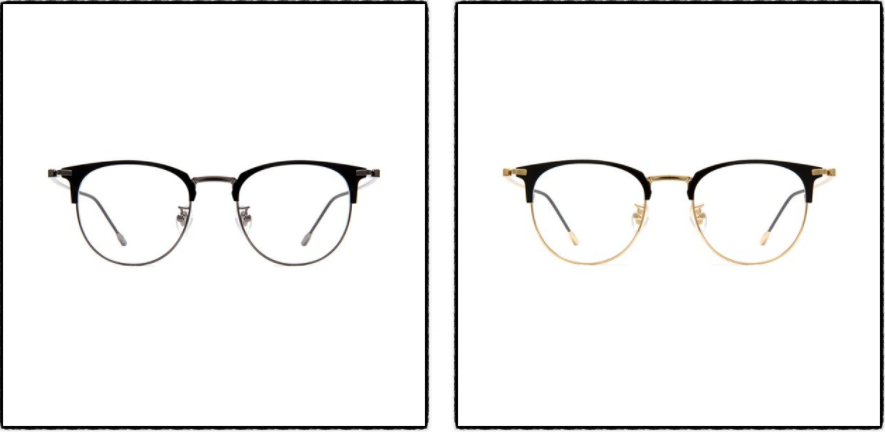

당신에게 어울리는 안경은...
"위는 각지고 아래는 둥근 안경"

일명 캣츠 안경!
위는 각지고 아래는 둥근 안경은 얼굴형이 역삼각형인 분들에게 추천드려요!
역삼각형의 얼굴형은 사람들에게 날카로운 이미지를 심어 줄 수 있어요
하지만 이 안경을 착용한다면 이런 날카로운 이미지를 부드럽게 하며 캣츠 디자인으로 세련미를 더해준답니다
이태리안경원(ITALY 1980)
의
'코페낙스 안경테'
는 다양한 모양과 색상이 있어 각각 조금씩 다른 이미지를 보여줄 수 있어요
이태리안경원에서 다채로운 분위기 연출해보는 것 어떤가요?
다시하기
다른 결과도 보고싶어요!
이 안경 사고싶다면?
Info. 이태리안경원(ITALY 1980)
Tel. 02-888-4849
Adress. 서울 관악구 신림로 327 1층(신림역 2호선 3번출구 20m)
Website.
http://blog.naver.com/italy1980
Kakao Talk. 이태리안경italy1980